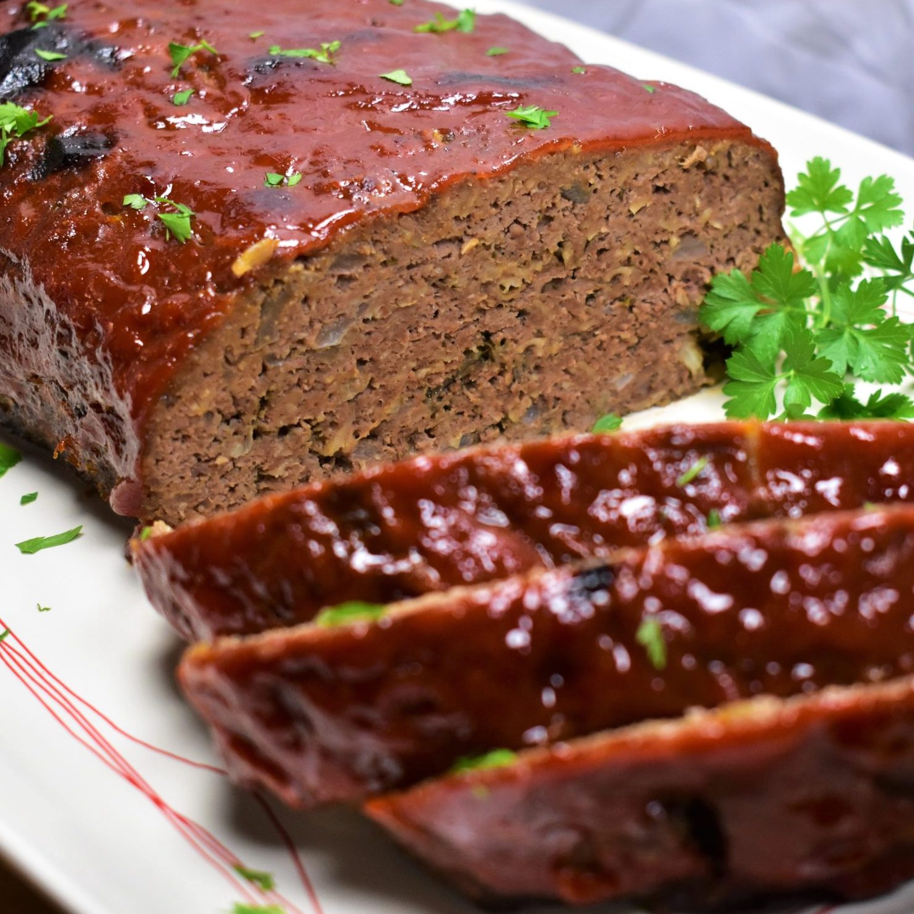

Easy Meatloaf

Description
This is a very easy and no fail recipe for meatloaf. It won't take long to
make at all, and it's quite good!
Ingredients
- 1 ½ pounds ground beef
- 1 Egg
- 1 onion, chopped
- 1 cup milk
- 1 cup dried bread crumbs
- salt and pepper to taste
- 2 tablespoons brown sugar
- 2 tablespoons prepared mustard
- ⅓ cup ketchup